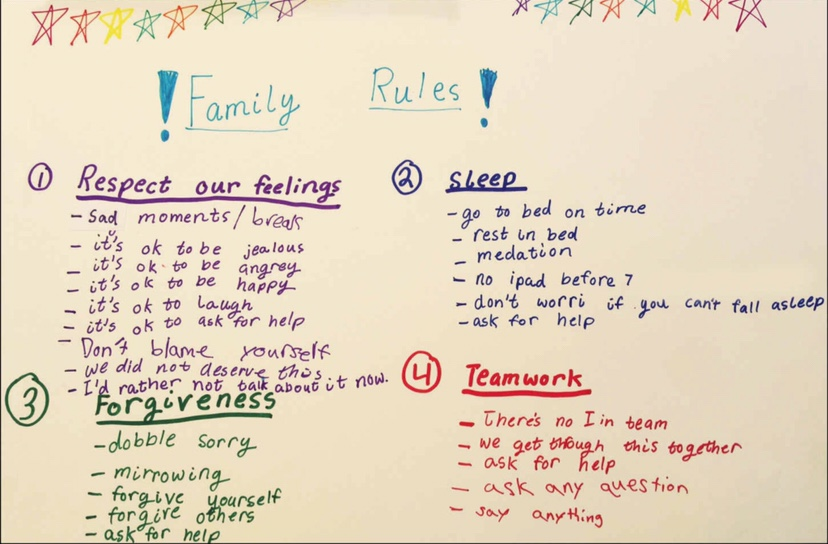

写这篇指南只有一个目的就是：做对的事情，远比把事情做对重要。
在家里和孩子共同商定“家庭规则”，这是典型的精英水平做事的章法。如以下就是桑德博格家的：

孩子现在小，所以先草拟家庭范围的。
态度篇
态度端正是做好所有事情的前提。
任何时候，态度要真诚平和。
任何时候，切记所有的出发点都是做对的事情。以解决问题为核心，只对事不对人。
不升华到对人的否定。涉及到成长提高的事情，只说真话，不讨好，不谄媚。任何时候，鼓励孩子犯错和尝试。
行动可以不完美，但不能不行动。见卡片：在行动上，完成比完美重要。不要期待一口气做得很精致、很完善。行为上的好，都需要用时间去积累、去打磨。
交流篇
充分的交流是家庭幸福的保障。既提供了反馈，又不伤感情，也就是对事不对人。
只讨论不争论，不拉黑，不提离婚。
交流的恶性争执，都源于理念和价值观的冲突。所以坚持自我学习成长，同时坚持反思梳理自己的价值观，每日所思所想都有记录。如爸爸发起的这份指南，也是一次梳理，以保持家庭愿景和目标一致。长期积累，会形成一笔宝贵的无形资产——家庭成长记录（案例集），有朝一日可以拿出来给孩子展示试错和记录的好处。对于交流的不顺畅，不要灰心，继续尝试增加交流次数和方法。
如尝试多种渠道，多种角度，多种场景，多个案例去让对方理解自己表达的中心。可以表示理解但不必强求认同，世界本来就很复杂。虚心听从被大量证实有效的建议和方法，持续提高交流质量。
如来自一个家庭20年不吵架的过来人的建议是：夫妻不吵架或者逐步减少吵架频率的方法论无非是：
- 共同创建协议，
- 共同遵守协议，
- 共同升级协议。
所以这份指南，需要家庭一起升级。可以在家庭会议中提出修改意见，需要做到凡意见必有出处和实证。
一旦发生了争执，话题马上停止，别说话，只约定说要在家庭会议讨论。
开始准备梳理反思事情起因、对策、证据确凿的在家庭会议上提出来。讨论后并沉淀经验下来，共同更新协议。
轮流主持，随便培养孩子的领导力。
生活与作息
以培养好习惯为核心。
早起。
早起的意义自己去发掘，也可以听听爸爸的建议。培养高质量睡眠的习惯。
踏实安稳睡眠的前提是养成良好的作息。大部分病痛都是生活不规律，不节制导致。固定午休。
别睡过头。晚上早睡。现阶段满满要努力提前到21：30
宜有固定的流程，即仪式感。如睡前就刷牙，刷牙后就上厕所，上完厕所后就讲故事，讲完故事后就关灯就睡。节省的时间都是大人的，每天节省1小时，一年节省15天。
节制，不贪多。
见物品价值观
不要一次睡太久，吃太多，玩太久。劳逸结合，舒张有度，才能保持活力和精力。晚饭后散步。
家庭教育
以身作则，做最好的示范。孩子什么样，取决于自己是什么样的人。
指导孩子的时候，理念和原则一致。
让孩子明白原则上的事情，没得商量，没有靠山。不在孩子面前讨论别人是非。
想想自己这方面做好了吗？有没有优点值得借鉴，缺点值得防范？孩子生病或意外已经发生，不要彼此怪罪和自责。
先解决问题，别自乱阵脚。孩子生病应该从最根本的提高抵抗力开始。
如引导孩子不挑食，引导孩子喜欢上运动。如：饭前运动1小时，满满会主动过来一起；有机会就提出带着三轮车出去；坚持散步或外出不让大人抱或背。正确的时候地点做正确的事情。
不在吃的时候玩，玩的时候吃（不卫生）；
不在床上玩手机，不在床上吃东西（影响睡眠）。
事情书桌前处理，东西餐桌前吃。看电视不超过25分钟每天。听音乐陪伴阅读和讲故事效果更好！
电视是过度刺激的信息源，会让孩子持续兴奋烦躁，无法保持专注。
一种片源例外：增长见识，激发兴趣，启迪心灵的，有意义的TED、纪录片和电影。每月精读一本教育元书，并时刻在场景中应用，多实验多交流心得。2017年6~7月是「无条件养育」。
- 一项挑战：自学英语，日常用英语对话。